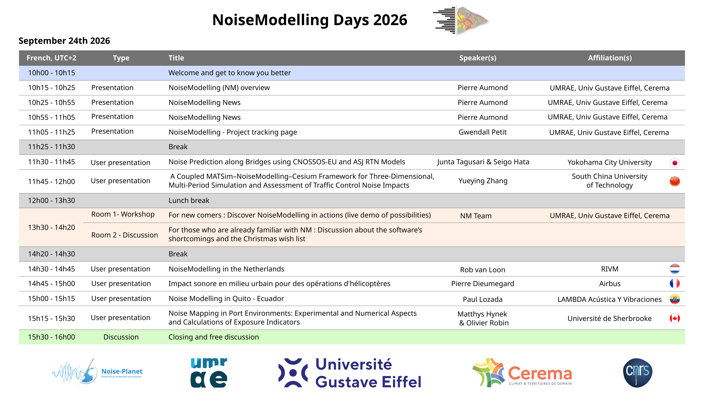

NoiseModelling days
NoiseModelling days
NoiseModelling Days are an opportunity to bring the community together and showcase advances in a friendly atmosphere.
You can access to the former events HERE.
NoiseModelling Days 2026
NoiseModelling Days 2026 will take place online, on Thursday 24 September 2026.
(Temporary) Program

Participation
Participation is open to all and free of charge but subscription is mandatory. Just fill this form.
Once registered, you will receive the details on how to join the video conference shortly.
We look forward to seeing you at this friendly event!